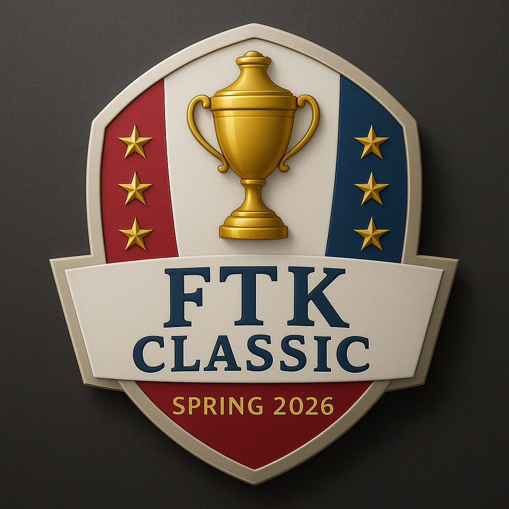

FTK Classic
Past Champions
Home
Scores
Photos
Competitors
Past winners
Fall 2025 FTK Classic
Played on November 28th, 2025 – Boscobel Golf Course
Winning team
Dawgleg GC (Will Miller, Jon Wall, Ivan Bolds, David Wolf)